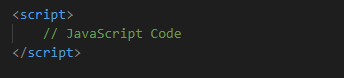
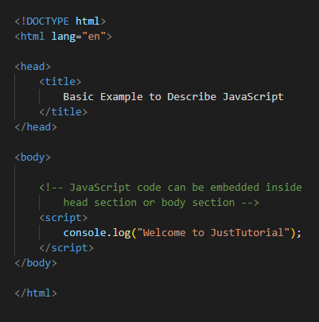

.png)

JavaScript
- Client-side– It supplies objects to control a browser and its Document Object Model (DOM). Like if client-side extensions allow an application to place elements on an HTML form and respond to user events such as mouse clicks, form input, and page navigation. Useful libraries for the client-side are AngularJS, ReactJS, VueJS and so many others.
- Server-side– It supplies objects relevant to running JavaScript on a server. Like if the server-side extensions allow an application to communicate with a database, and provide continuity of information from one invocation to another of the application, or perform file manipulations on a server. The useful framework which is the most famous these days is node.js.
- Imperative language– In this type of language we are mostly concern about how it is to be done . It simply control the flow of computation . The procedural programming approach , object, oriented approach comes under this like async await we are thinking what it is to be done further after async call.
- Declarative programming– In this type of language we are concern about how it is to be done , basically here logical computation require . Here main goal is to describe the desired result without direct dictation on how to get it like arrow function do .
JavaScript can be added to your HTML file in two ways:
- Internal JavaScriptWe can add JavaScript directly to our HTML file by writing the code inside the < script > tag. The < script > tag can either be placed inside the < head > or the < body > tag according to the requirement.
- External JavaScriptWe can write JavaScript code in other file having an extension.js and then link this file inside the < head > tag of the HTML file in which we want to add this code.
Syntax:

Example:
